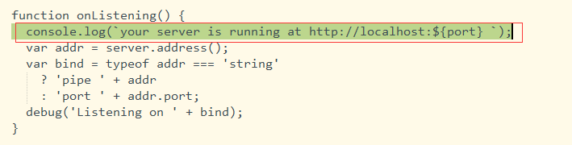

学习目标
1.1、express介绍
1.2、安装和创建基于express的项目
1.3、express 初始化项目讲解
1.4、路由讲解
1.5、模板引擎EJS
什么是EJS、EJS模板有什么特点、EJS成员函数、EJS常用标签、Includes使用
2.1 自主搭建一个express开发环境
2.2 解读express的项目文件
3.1 Koa入门 --- 之后讲
Koa与express、创建Koa工程、Koa中间件
3.2 测试框架Mocha --- 之后讲
Mocha安装和准备、测试框架、chai、项目案例、运行多个案例
4.1 理解复习第三节课讲的内容
5.1 应用express创建一个项目框架
5.2 编写一个项目测试用例
6.1 复习及其拓展案例
课程大纲及其笔记
1.1 express介绍
基于 Node.js 平台，快速、开放、极简的 web 开发框架
1.2、安装和创建基于express的项目 ---- 脚手架
创建项目（选择模板）、进入项目、安装依赖、运行项目
npm install express-generator -g
express myapp //默认为jade模板，如果需要ejs模板，则后边加上 -e express myapp -e
cd myapp
npm install
npm run start
一定要设置提示语句 ./bin/www

1.3、express 初始化项目讲解

1.4、路由讲解
路由（Routing）是由一个 URI（或者叫路径）和一个特定的 HTTP 方法（GET、POST 等）组成的，涉及到应用如何响应客户端对某个网站节点的访问。
每一个路由都可以有一个或者多个处理器函数，当匹配到路由时，这个/些函数将被执行。
路由的定义由如下结构组成：app.METHOD(PATH, HANDLER)。
app 是一个 express 实例；
PATH 是服务器端的路径；
HANDLER 是当路由匹配到时需要执行的函数。
每一次修改文件，都需要重新启动服务器，引入supervisor模块，进行服务器的热替换
cnpm i supervisor -g
修改package.json中scripts选项
"dev": "supervisor ./bin/www"
cnpm run dev
1.5、模板引擎EJS
什么是EJS：https://ejs.bootcss.com/
高效的 JavaScript 模板引擎。
EJS 是一套简单的模板语言，帮你利用普通的 JavaScript 代码生成 HTML 页面
EJS模板有什么特点
快速编译与绘制输出
简洁的模板标签：<% %>
自定义分割符（例如：用 <? ?> 替换 <% %>）
引入模板片段
同时支持服务器端和浏览器 JS 环境
JavaScript 中间结果静态缓存
模板静态缓存
兼容 Express 视图系统
EJS成员函数
<% if (user) { %>
<h2><%= user.name %></h2>
<% } %>
EJS常用标签
* <% '脚本' 标签，用于流程控制，无输出。
* <%_ 删除其前面的空格符
* <%= 输出数据到模板（输出是转义 HTML 标签） ----- 将html标签原样输出
* <%- 输出非转义的数据到模板 ----- 会解析HTML标签
* <%# 注释标签，不执行、不输出内容
* <%% 输出字符串 '<%'
* %> 一般结束标签
* -%> 删除紧随其后的换行符
* _%> 将结束标签后面的空格符删除
Includes使用
通过 include 指令将相对于模板路径中的模板片段包含进来。
<%- include( './test.ejs' ) %>
2.1 自主搭建一个express开发环境
2.1.1 打开网址http://adminlte.la998.com/starter.html，打开网页的源代码，选中body标签中的代码，复制，粘贴至index.ejs,负责body的样式到index.ejs
2.1.2 复制原网站的css文件和js文件以及图标库
1、cnpm i bootstrap@3.3.6 找到其中的dist文件夹，将其内容复制到public/bootstrap
2、cnpm i admin-lte 找到其中的dist文件夹，将其内容复制到public/admin-lte
3、cnpm i jquery@2.2.3 放到public/javasripts
其余文件点击另存为，css放在public/stylesheets,js放在public/javasripts，图标文件放在public/fonts

先创建项目，创建好之后将public文件复制到你的项目中
在你的页面中引入如下css
<Link rel = 'stylesheet' href = '/bootstrap/css/bootstrap.min.css' />
<Link rel = 'stylesheet' href = '/stylesheets/font-awesome.min.css' />
<Link rel = 'stylesheet' href = '/stylesheets/ionicons.min.css' />
<Link rel = 'stylesheet' href = '/admin-lte/dist/css/AdminLTE.min.css' />
<Link rel = 'stylesheet' href = '/admin-lte/dist/css/skins/skin-blue.min.css' />
页面底部引入js
<script src = "/javascripts/jquery.min.js" ></script>
<script src = "/bootstrap/js/bootstrap.min.js" ></script>
<script src = "/javascripts/app.min.js" ></script>
页面body部分
<body class="hold-transition skin-blue sidebar-mini">
<div class="wrapper">
<!-- Main Header -->
<header class="main-header">
<!-- Logo -->
<a href="index2.html" class="logo">
<!-- mini logo for sidebar mini 50x50 pixels -->
<span class="logo-mini"><b>A</b>LT</span>
<!-- logo for regular state and mobile devices -->
<span class="logo-lg"><b>Admin</b>LTE</span>
</a>
<!-- Header Navbar -->
<nav class="navbar navbar-static-top" role="navigation">
<!-- Sidebar toggle button-->
<a href="#" class="sidebar-toggle" data-toggle="offcanvas" role="button">
<span class="sr-only">切换导航</span>
</a>
<!-- Navbar Right Menu -->
<div class="navbar-custom-menu">
<ul class="nav navbar-nav">
<!-- Messages: style can be found in dropdown.less-->
<li class="dropdown messages-menu">
<!-- Menu toggle button -->
<a href="#" class="dropdown-toggle" data-toggle="dropdown">
<i class="fa fa-envelope-o"></i>
<span class="label label-success">4</span>
</a>
<ul class="dropdown-menu">
<li class="header">You have 4 messages</li>
<li>
<!-- inner menu: contains the messages -->
<ul class="menu">
<li><!-- start message -->
<a href="#">
<div class="pull-left">
<!-- User Image -->
<img src="/images/user2-160x160.jpg" class="img-circle" alt="User Image">
</div>
<!-- Message title and timestamp -->
<h4>
Support Team
<small><i class="fa fa-clock-o"></i> 5 mins</small>
</h4>
<!-- The message -->
<p>Why not buy a new awesome theme?</p>
</a>
</li>
<!-- end message -->
</ul>
<!-- /.menu -->
</li>
<li class="footer"><a href="#">查看所有消息</a></li>
</ul>
</li>
<!-- /.messages-menu -->
<!-- Notifications Menu -->
<li class="dropdown notifications-menu">
<!-- Menu toggle button -->
<a href="#" class="dropdown-toggle" data-toggle="dropdown">
<i class="fa fa-bell-o"></i>
<span class="label label-warning">10</span>
</a>
<ul class="dropdown-menu">
<li class="header">You have 10 notifications</li>
<li>
<!-- Inner Menu: contains the notifications -->
<ul class="menu">
<li><!-- start notification -->
<a href="#">
<i class="fa fa-users text-aqua"></i> 5 new members joined today
</a>
</li>
<!-- end notification -->
</ul>
</li>
<li class="footer"><a href="#">全部</a></li>
</ul>
</li>
<!-- Tasks Menu -->
<li class="dropdown tasks-menu">
<!-- Menu Toggle Button -->
<a href="#" class="dropdown-toggle" data-toggle="dropdown">
<i class="fa fa-flag-o"></i>
<span class="label label-danger">9</span>
</a>
<ul class="dropdown-menu">
<li class="header">You have 9 tasks</li>
<li>
<!-- Inner menu: contains the tasks -->
<ul class="menu">
<li><!-- Task item -->
<a href="#">
<!-- Task title and progress text -->
<h3>
设计按钮
<small class="pull-right">20%</small>
</h3>
<!-- The progress bar -->
<div class="progress xs">
<!-- Change the css width attribute to simulate progress -->
<div class="progress-bar progress-bar-aqua" style="width: 20%" role="progressbar" aria-valuenow="20" aria-valuemin="0" aria-valuemax="100">
<span class="sr-only">20% Complete</span>
</div>
</div>
</a>
</li>
<!-- end task item -->
</ul>
</li>
<li class="footer">
查看所有任务
</li>
</ul>
</li>
<!-- User Account Menu -->
<li class="dropdown user user-menu">
<!-- Menu Toggle Button -->
<a href="#" class="dropdown-toggle" data-toggle="dropdown">
<!-- The user image in the navbar-->
<img src="/images/user2-160x160.jpg" class="user-image" alt="User Image">
<!-- hidden-xs hides the username on small devices so only the image appears. -->
<span class="hidden-xs">Alexander Pierce</span>
</a>
<ul class="dropdown-menu">
<!-- The user image in the menu -->
<li class="user-header">
<img src="/images/user2-160x160.jpg" class="img-circle" alt="User Image">
<p>
Alexander Pierce - Web Developer
<small>Member since Nov. 2012</small>
</p>
</li>
<!-- Menu Body -->
<li class="user-body">
<div class="row">
<div class="col-xs-4 text-center">
<a href="#">花朵</a>
</div>
<div class="col-xs-4 text-center">
<a href="#">销量</a>
</div>
<div class="col-xs-4 text-center">
<a href="#">好友</a>
</div>
</div>
<!-- /.row -->
</li>
<!-- Menu Footer-->
<li class="user-footer">
<div class="pull-left">
<a href="#" class="btn btn-default btn-flat">设置</a>
</div>
<div class="pull-right">
<a href="#" class="btn btn-default btn-flat">退出</a>
</div>
</li>
</ul>
</li>
<!-- Control Sidebar Toggle Button -->
<li>
<a href="#" data-toggle="control-sidebar"><i class="fa fa-gears"></i></a>
</li>
</ul>
</div>
</nav>
</header>
<!-- Left side column. contains the logo and sidebar -->
<aside class="main-sidebar">
<!-- sidebar: style can be found in sidebar.less -->
<section class="sidebar">
<!-- Sidebar user panel (optional) -->
<div class="user-panel">
<div class="pull-left image">
<img src="/images/user2-160x160.jpg" class="img-circle" alt="User Image">
</div>
<div class="pull-left info">
<p>Alexander Pierce</p>
<!-- Status -->
<a href="#"><i class="fa fa-circle text-success"></i> 在线</a>
</div>
</div>
<!-- search form (Optional) -->
<form action="#" method="get" class="sidebar-form">
<div class="input-group">
<input type="text" name="q" class="form-control" placeholder="Search...">
<span class="input-group-btn">
<button type="submit" name="search" id="search-btn" class="btn btn-flat"><i class="fa fa-search"></i>
</button>
</span>
</div>
</form>
<!-- /.search form -->
<!-- Sidebar Menu -->
<ul class="sidebar-menu">
<li class="header">HEADER</li>
<!-- Optionally, you can add icons to the links -->
<li class="active"><a href="#"><i class="fa fa-link"></i> <span>Link</span></a></li>
<li><a href="#"><i class="fa fa-link"></i> <span>Another Link</span></a></li>
<li class="treeview">
<a href="#"><i class="fa fa-link"></i> <span>多级菜单</span>
<span class="pull-right-container">
<i class="fa fa-angle-left pull-right"></i>
</span>
</a>
<ul class="treeview-menu">
<li><a href="#">Link in level 2</a></li>
<li><a href="#">Link in level 2</a></li>
</ul>
</li>
</ul>
<!-- /.sidebar-menu -->
</section>
<!-- /.sidebar -->
</aside>
<!-- Content Wrapper. Contains page content -->
<div class="content-wrapper">
<!-- Content Header (Page header) -->
<section class="content-header">
<h1>
Page Header
<small>Optional description</small>
</h1>
<ol class="breadcrumb">
<li><a href="#"><i class="fa fa-dashboard"></i> Level</a></li>
<li class="active">Here</li>
</ol>
</section>
<!-- Main content -->
<section class="content">
<!-- Your Page Content Here -->
</section>
<!-- /.content -->
</div>
<!-- /.content-wrapper -->
<!-- Main Footer -->
<footer class="main-footer">
<!-- To the right -->
<div class="pull-right hidden-xs">
Anything you want
</div>
<!-- Default to the left -->
<strong>Copyright © 2016 <a href="#">Company</a>.</strong> All rights reserved.
</footer>
<!-- Control Sidebar -->
<aside class="control-sidebar control-sidebar-dark">
<!-- Create the tabs -->
<ul class="nav nav-tabs nav-justified control-sidebar-tabs">
<li class="active"><a href="#control-sidebar-home-tab" data-toggle="tab"><i class="fa fa-home"></i></a></li>
<li><a href="#control-sidebar-settings-tab" data-toggle="tab"><i class="fa fa-gears"></i></a></li>
</ul>
<!-- Tab panes -->
<div class="tab-content">
<!-- Home tab content -->
<div class="tab-pane active" id="control-sidebar-home-tab">
<h3 class="control-sidebar-heading">近期活动</h3>
<ul class="control-sidebar-menu">
<li>
<a href="javascript::;">
<i class="menu-icon fa fa-birthday-cake bg-red"></i>
<div class="menu-info">
<h4 class="control-sidebar-subheading">Langdon 的生日</h4>
<p>Will be 23 on April 24th</p>
</div>
</a>
</li>
</ul>
<!-- /.control-sidebar-menu -->
<h3 class="control-sidebar-heading"> 任务进度</h3>
<ul class="control-sidebar-menu">
<li>
<a href="javascript::;">
<h4 class="control-sidebar-subheading">
自定义模板设计
<span class="pull-right-container">
<span class="label label-danger pull-right">70%</span>
</span>
</h4>
<div class="progress progress-xxs">
<div class="progress-bar progress-bar-danger" style="width: 70%"></div>
</div>
</a>
</li>
</ul>
<!-- /.control-sidebar-menu -->
</div>
<!-- /.tab-pane -->
<!-- 统计信息选项卡内容 -->
<div class="tab-pane" id="control-sidebar-stats-tab"> 统计信息选项卡内容</div>
<!-- /.tab-pane -->
<!-- Settings tab content -->
<div class="tab-pane" id="control-sidebar-settings-tab">
<form method="post">
<h3 class="control-sidebar-heading">常规设置项</h3>
<div class="form-group">
<label class="control-sidebar-subheading">
报告面板用法
<input type="checkbox" class="pull-right" checked>
</label>
<p>
常规设置选项的相关信息
</p>
</div>
<!-- /.form-group -->
</form>
</div>
<!-- /.tab-pane -->
</div>
</aside>
<!-- /.control-sidebar -->
<!-- Add the sidebar's background. This div must be placed
immediately after the control sidebar -->
<div class="control-sidebar-bg"></div>
</div>
</body>
2.1.3 分割页面，使用include导入页面

2.1.4 修改menu.ejs文件（文字，图标、路由）

2.1.5 设置路由（删除了routes/users.js,并且删除了app.js中关于users文件的两行代码）

2.2 解读express的项目文件
3.1 Koa入门
基于nodejs平台的下一代web开发框架
koa 是由 Express 原班人马打造的，致力于成为一个更小、更富有表现力、更健壮的 Web 框架。
使用 koa 编写 web 应用，通过组合不同的 generator，可以免除重复繁琐的回调函数嵌套， 并极大地提升错误处理的效率。
koa 不在内核方法中绑定任何中间件， 它仅仅提供了一个轻量优雅的函数库，使得编写 Web 应用变得得心应手。
Koa与express
创建Koa工程
Koa中间件
3.2 测试框架Mocha --- 后期讲解
Mocha安装和准备
测试框架
chai
项目案例
运行多个案例
4.1 理解复习第三节课讲的内容
5.1 应用express创建一个项目框架
5.2 编写一个项目测试用例
6.1 复习及其拓展案例
6.1.1 HTTP请求方式
GET、POST、HEAD、PUT、DELETE、TRACR、OPTIONS、CONNECT、PATCH
6.1.2 Javascript中Generator(生成器) ----- es6的一个新特性 https://www.cnblogs.com/diligenceday/p/5488037.html
6.1.3 parseInt(val, 10) 第二个参数代表的意思
6.1.4 isNaN()函数判断是否是数字
6.1.5 es6字符串模板
6.1.6 从内容/css/js/图片描述前端性能优化
6.1.7 端口号范围